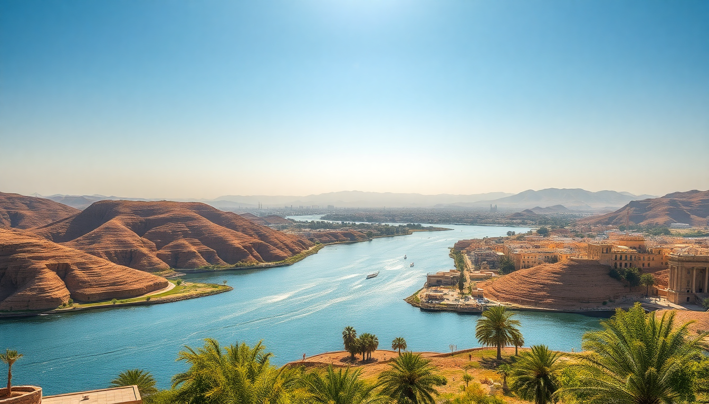

Where to Stay in Aswan: Best Neighborhoods for Every Budget

I landed in Aswan after a long train ride from Luxor, and the first thing I noticed was how quiet it felt — a slower, dustier, more intimate version of Egypt’s usual chaos. Over four days, I stayed in three different neighborhoods to figure out which one works for which type of traveler. Here’s what I learned about where to sleep, eat, and wander in Aswan.
Why Stay on Elephantine Island Instead of the Corniche?
Elephantine Island is the outlier choice, and I think it’s the right one if you want to actually feel Aswan rather than just look at it. You take a public ferry (5 EGP per person) across the Nile, and suddenly you’re in a Nubian village with painted houses, sandy paths, and zero car noise.
We stayed at Mövenpick Resort Aswan on the island’s north tip — it’s the big resort you see from the Corniche. The pool overlooks the river, and the breakfast buffet includes fuul and fresh mango juice. But the real reason to stay here is the sunset view from the terrace: you watch feluccas drift past while the call to prayer echoes from the mainland.
- Mövenpick Resort Aswan — mid-range, great pool, direct ferry access to town
- Eco Nubia — budget guesthouse on the island’s south side, basic but authentic
- Nubian House — family-run, rooftop dinners, book ahead because it’s small
Downside: you’re dependent on ferries, which stop running around midnight. If you plan to hit the night market on the Corniche, you’ll need to take a private boat back for 50–100 EGP.
Is the Corniche Too Touristy for a Good Stay?
The Corniche is Aswan’s main riverside promenade, and yes, it’s touristy — touts selling felucca rides every 20 meters, souvenir stalls, and a constant stream of cruise ships docked along the bank. But it’s also the most convenient base. Everything is walkable: the Nubian Museum, the souk, the train station.
We spent one night at Basma Hotel, which sits on a hill above the Corniche. The rooms are dated (think 1980s furniture), but the view from the cliffside pool is unbeatable — you look straight across to Elephantine Island and the desert beyond. The breakfast terrace is where I had the best ful medames of the trip.
- Basma Hotel — mid-range, great views, slightly faded charm
- Pyramisa Isis Island Resort — on its own island connected by bridge, good for families
- Sofitel Legend Old Cataract — splurge option, Agatha Christie stayed here, afternoon tea on the terrace is worth the price even if you don’t sleep there
If you stay on the Corniche, you’ll be hassled by touts. Just say “la, shukran” and keep walking — they’ll leave you alone after two or three attempts.
What’s the Deal with the Nubian Village on the West Bank?
The West Bank is not a single neighborhood — it’s a string of Nubian villages across the river from the Corniche, accessible only by boat. This is where I’d send anyone who wants a cultural immersion without the resort vibe. The houses are painted in bright blues, oranges, and yellows, and many families run small guesthouses.
We took a felucca from the Corniche to Gharb Seheyl village for a day trip. A local named Ahmed showed us his family’s guesthouse, Nubian Dreams Lodge, where you sleep on a rooftop mattress under mosquito nets. The bathroom was shared, the shower was cold, but the dinner — grilled fish, okra stew, fresh bread — was the best meal I had in Aswan.
- Nubian Dreams Lodge — budget, shared facilities, unforgettable hospitality
- Anakato Nubian House — mid-range, private rooms, colorful interiors, Instagram-famous facade
- Kato Dool Wellness Resort — splurge, spa included, private pool, but feels more curated than authentic
The catch: getting to the West Bank requires a boat, and if you’re coming back late, you’ll pay a premium. Also, mosquitoes are relentless after sunset — bring repellent.
Which Budget Hotels Actually Deliver Near the Train Station?
Aswan’s train station area is gritty, chaotic, and not where I’d recommend staying for leisure. But if you’re arriving late on the overnight sleeper from Cairo or catching an early train to Luxor, it’s practical. I checked into Philae Hotel for one night — it’s a five-minute walk from the station, and the rooms are clean if bare-bones. The staff helped me book a taxi to Abu Simbel for 300 EGP, which was fair.
- Philae Hotel — budget, basic, great location for train travelers
- Hapi Hotel — slightly nicer, rooftop restaurant, still under $40 a night
- Nile Hotel Aswan — dirt cheap, thin walls, fine for a crash pad
Don’t wander the station area after dark alone. It’s not dangerous in a violent sense, but the touts are relentless, and the streets are poorly lit. I grabbed a koshari from El Tahrir Koshari (a local chain near the station) and ate it in my room — cheap, filling, and safe.
Is the High-End Resort Experience Worth It at Old Cataract?
The Sofitel Legend Old Cataract is Aswan’s most famous hotel, and I’ll be honest: I didn’t stay there. But I did book afternoon tea on the terrace (400 EGP for a set menu), and I spent an hour walking the grounds. The hotel sits on a granite outcrop overlooking the Nile, and the architecture is a mix of Victorian and Moorish. It’s beautiful.
If you have the budget (rooms start around $300 a night), you get access to the private garden, a pool that’s actually warm in winter, and a level of service that makes you feel like a colonial-era explorer. But the surrounding neighborhood — the southern end of the Corniche — is quiet to the point of being dead. You’ll walk 15 minutes to find a decent restaurant that isn’t part of the hotel.
- Sofitel Legend Old Cataract — splurge, historic, book afternoon tea even if you don’t stay
- Mövenpick Resort Aswan — better value, similar views, more casual vibe
What’s the Best Area for Solo Travelers or Digital Nomads?
I’d pick the northern Corniche near the Aswan Market if I were traveling alone. It’s busy enough to feel safe at night, there are half a dozen cafes with WiFi (try Panorama Cafe for river views and strong coffee), and the market itself is a good place to buy spices, scarves, and tea without the hard sell of the tourist souk.
We met a solo traveler from Germany at Nubian House on Elephantine Island who said she preferred the island because it forced her to disconnect — no WiFi in her room, just a hammock and a book. If you need to work, stick to the Corniche. If you want to actually relax, pick the island.
- Panorama Cafe — reliable WiFi, good coffee, river views
- Aswan Market — buy dried hibiscus and mint tea, haggle politely
- Nubian House — digital detox, rooftop with no WiFi, sunset views
FAQ
Is it safe to stay in the Nubian villages on the West Bank? Yes, it’s very safe. The families running guesthouses are welcoming and used to foreign visitors. The main risk is getting lost at night — the villages have no streetlights, and paths are unpaved. Carry a phone with offline maps (I used Maps.me) and arrange a boat pickup in advance. I never felt unsafe, just disoriented.
How do I get from the airport to my hotel in Aswan? Aswan International Airport is about 25 minutes from the Corniche by car. A taxi into town costs 200–300 EGP — negotiate before you get in. There’s no Uber, but the airport has a fixed-price taxi counter inside the arrivals hall. I used that and paid 250 EGP to reach Basma Hotel. Don’t accept rides from touts outside; they’ll quote double.
Which neighborhood is best for families with kids? The Corniche, specifically the area around Pyramisa Isis Island Resort (connected by a bridge, so no ferry hassle). The resort has a kids’ pool, a playground, and a buffet that even picky eaters will find something at. Elephantine Island is too complicated with young children — the ferries are small and the paths are uneven. Stick to the mainland.
Conclusion
- Stay on Elephantine Island for quiet, authentic vibes and sunset views — but be okay with ferry schedules.
- The Corniche is the most convenient base for first-time visitors and solo travelers who need WiFi and walkable access.
- West Bank villages offer the best cultural immersion and food, but you’ll trade comfort for authenticity.
- Near the train station is only worth it for transit — skip it for leisure.
- Book afternoon tea at Old Cataract even if you can’t afford a room — it’s a legitimate experience, not a tourist trap.